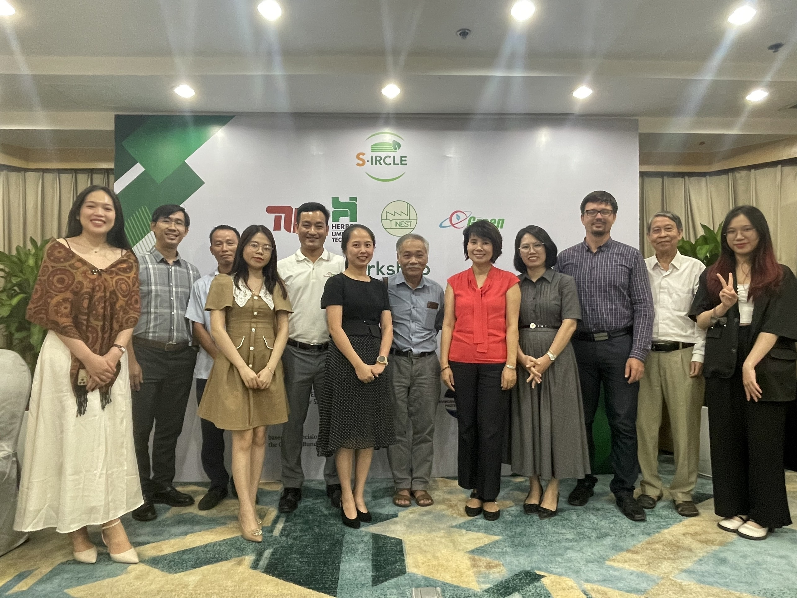
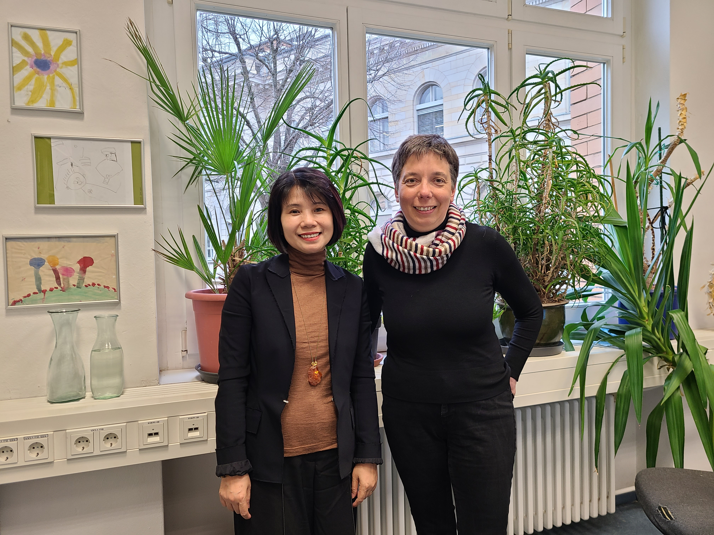

Welcome to S-IRCLE project
S-IRCLE project focuses on addressing key challenges in small-scale biogas plants. The primary objective is to develop an innovative, automatic, regenerable external filter system capable of effectively
removing hydrogen sulfide (H2S) from biogas. This is crucial as H2S poses health risks and can lead to corrosion, reducing the lifespan of biogas appliances. Furthermore, the project aims to recycle sulfur present
in the loaded filter material as an alternative sulfur fertilizer, promoting sustainable resource utilization.
Overall, S-IRCLE project encompasses both technical development and environmental evaluation, aiming to contribute to the advancement of biogas technology in Vietnam and pave the way for a more sustainable and efficient biogas utilization.
NEWS
New biogas filters installed successfully
07/08/2023The engineers from HUT and EG successfully completed the installation of advanced biogas filters across three biogas plants in Nam Dinh province. These systems encompass a comprehensive suite of components, including a data logger, a compact air pump for ambient air infusion during biogas utilization, pressure and temperature sensors, and a gas meter to measure the biogas flow into the filter. The filters are scheduled for a year-long testing phase, overseen by EG's local engineer.


S-IRCLE workshop in Hanoi
04/08/2023"Circular Biogas Technology - Smart Filter Systems for H2S-Removal and S-Recovery" workshop was successfully conducted. During the workshop, Trang Hoang presented the S-IRCLE project, while Marcel Spahr introduced a novel biogas filter featuring continuous regeneration functionality. The S-IRCLE team garnered substantial interest, with numerous inquiries and suggestions regarding the adaptation of this innovative technology to the conditions in Vietnam Notable participants included the Vietnam Biogas Association, SNV BioLive team, enterprising biogas entrepreneurs, and dedicated pig farmers, collectively igniting a promising dialogue.
S-IRCLE Project tree is planted
04/08/2023A planting tree event was held on the campus of Hanoi University of Science and Technology, joined by representatives from S-IRCLE project partners. A pomelo tree has been selected as the perennial fruit plant and local species in Vietnam. This tree will grow together with the project and also make a contribution to combating climate change by absorbing CO2 from the air.

Visiting the biogas plants in Nam Dinh Province
03/08/2023Marcel Spahr - an engineer from Herbst Umwelttechnik GmbH has arrived in Vietnam and is accompanied by Mr. Thuan - a technician from Egreen Technology JSC. to visit the 3 small-scale biogas plants in Nam Dinh province. The primary objective of their mission is the installation of innovative biogas filters, poised to usher in a new era of efficiency and eco-consciousness. This joint effort will see the filters undergo a rigorous year-long testing phase, marking a significant stride towards a greener and more sustainable future in biogas production. Stay tuned for the promising results of this collaboration.

Invitation and registration for S-IRCLE workshop
01/07/2023S-IRLCE project will organize a workshop called "Circular Biogas Technology - Smart Filter Systems for H2S-Removal and S-Recovery" at Sunway Hotel, Hanoi on the 4th August 2023. With the participation of the experts and biogas companies from Vietnam and Germany, the purpose of the workshop are to introduce S-IRCLE proejct and the novel biogas filter which was developed for the small-scale biogas plants and to facilitate a comprehensive discussion on the advantages and disadvantages of this innovative technology, as well as explore its potential applications and methods for widespread adoption throughout Vietnamm. The invitation with program and the registration form for the workshop, please check the links below.
Invitation and progam: click here
Registration form: click here
First plant test is conducted at the open greenhouse at IGZ
16/06/2023The pot test is performed to examine the relationship between the grain size of FerroSorp, the absorbent material used in the biogas filter for capturing H2S from biogas, and the release of sulfur in the soil. The study aims to evaluate the impact of this sulfur release on the growth of Pak Choi. The test takes place in an open greenhouse at the IGZ (Leibniz-Institut für Gemüse- und Zierpflanzenbau e.V.) in Großbeeren. The Pak Choi plants will be allowed to grow for a period of 9-10 weeks before they are harvested.
Prof. Nguyen Anh Tuyet has visited TU Berlin
17/04/2023Prof. Nguyen Anh Tuyet, representing Hanoi University of Science and Technology has come to Berlin and visited Technische Universitaet Berlin as part of the S-IRCLE project. During the meeting, she had a meeting with Prof. Vera Susanne Rotter from TU Berlin. The primary focus of their discussion revolved around exchanging ideas and planning the project activities in detail. The meeting proved to be instrumental in fostering a strong partnership and setting the stage for a productive and long-term collaboration between the two professors and their respective institutions.
S-IRCLE Project Kickoff Meeting
06/04/2023The kickoff meeting of S-IRCLE project was organized by the Chair of Circular Economy and Recycling Technology, TU Berlin with the participation of the project partners including: Herbst Umwelttechnik GmbH, INEST and Egreen. In this meeting, the working packages, activites and the time plan of S-IRCLE project was planned and discussed.